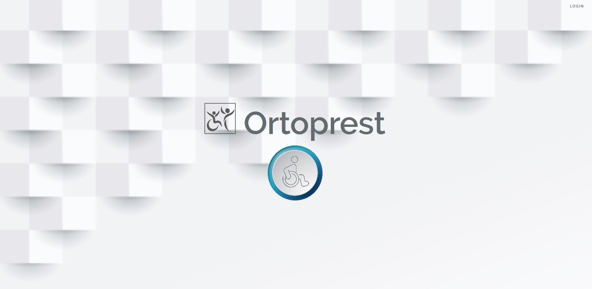

ORTOPREST
Enero 2020
Aplicación web para la gestión de prestaciones ortoprotésicas.
Proyecto Final F.P. Superior Desarrollo de Aplicaciones Web
Realizado con el framework Laravel, permite la autenticación segura de administradores y usuarios, así como la recuperación de contraseña, mediante hash.
Mantiene privilegiios de seguridad que evita el uso indebido de partes sensibles por los usuarios sin rol de administrador.